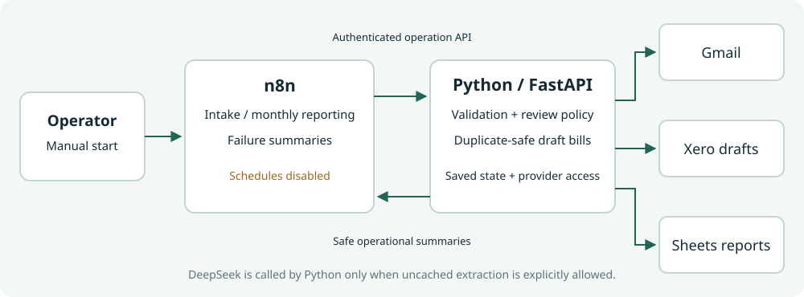

Configuration:
COMPLETED PORTFOLIO EXTENSION
See what each
workflow step passes on.
Start intake, inspect exceptions and refresh reports.
Python retains financial rules and provider access.
n8nFastAPIGmailXero draftsGoogle Sheets
FOLLOW ONE SUMMARY ITEM
Invoice intake, node by node
SYSTEM BOUNDARY
Visible operations, durable financial controls.

Zero uncached extraction allowance applies to the n8n intake API. Cached eligible invoices can still create drafts under the configured review policy. This intake API can write accounting data.
MONTHLY REPORTING
One month, then the next.
Read available months, refresh one at a time and verify each result by read-back. A failed report can be refreshed independently. Earlier successful months may refresh again.
EXCEPTIONS AND FAILURES
Completed intake can still need attention.
Held invoices remain visible in the app with source evidence. Technical failures produce a local safe summary and stop for inspection. No automatic financial retries or outgoing notifications.
OPERATOR HANDOVER
Inspect, recover and shut down.
The guide covers fresh import, credential binding, input/output views, restart, token rotation and schedule shutdown. User learning exercises are separate from engineering acceptance.
Inspect or reproduce it
Operator guide ↗Credential-free workflow exports ↗Sanitized acceptance evidence ↗Local synthetic demo only. Public code and this static walkthrough are shareable. Client hosting, authentication, monitoring and representative acceptance require separate scope.